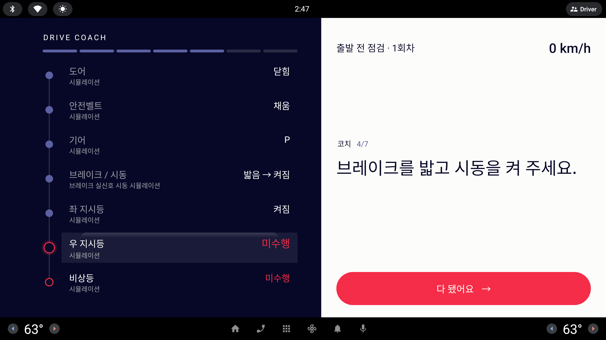

지금 코드는 모드마다 말하는 방식이 다르다(가이드 = 한 항목씩 지시 · 힌트 = 틀릴 때만 · 평가 = 끝에 판정). 그런데 왼쪽 목록은 세 모드 모두 같은 것을 같은 모양으로 다 보여 줘서, 힌트·평가에서도 "할 일과 됨/안 됨" 이 다 보인다. 다섯 안은 모드마다 무엇을 보여 주고 무엇을 감추는지를 정한다. 안마다 세 모드를 나란히, 그리고 "보이는 것 · 들리는 것" 표.
사용자 피드백 (원문, 10/7) — #출발전점검
- 가이드/힌트/테스트 명확화 필요 (뭔가 차이가 없는 듯하여 검토 필요)
아래 그림은 실제의 1/3 — 모드마다 왼쪽 패널(위)과 오른쪽 열의 말 부분(아래)만 잘라 붙였다. 실제 화면은 약 3배
모든 안의 같은 순간1회차. 운전자가 도어 → 안전벨트 → 기어까지 하고, 브레이크 없이 시동을 켰다(사진의 "브레이크 없이 켜짐" 상황). 남은 셋(좌·우 지시등 · 비상등)은 아직. 위 단계 막대 · 아래 "확인 상태" 눈썹은 3번 페이지대로 뺐다.
세 모드 모두 같은 것오른쪽 머리 `출발 전 점검 · 1회차` · 속도 · 신호 출처 `시뮬레이션 신호` · 아래 `다 됐어요 →` 알약(그림에서는 생략). 채점은 세 모드 모두 똑같이 기록한다 — 바뀌는 것은 보여 주는 범위와 말뿐(정직성: 감춘 것도 판정 화면에서 전부 공개).
상태기계 쪽 사실`Maneuver` 에 `mode` · `guide`(가이드만) · `lastHint`(힌트만) · `preDrive`(기록된 확인) 가 이미 있다. 그래서 다섯 안 대부분은 화면(Codex)만 바꾸면 된다. 평가에서 "한 순서" 를 보여 주는 안(2)만 기록 순서 필드가 새로 필요하다.
지금 · 가이드 모드 캡처 — 왼쪽 목록은 세 모드 모두 이 모양 (lesson-maneuver-checklist-mixed.png)

지금
목록은 세 모드 모두 같다
왼쪽 목록은 모드와 무관하게 일곱 항목의 이름 · 현재 값(닫힘·채움·P…) · 빨간 "미수행" 을 다 보여 준다. 오른쪽만 가이드는 `코치 n/7` + 지시문, 힌트는 마지막 힌트, 평가는 빈칸.
문제
힌트·평가가 가이드처럼 보인다 — 빨간 "미수행" 이 곧 할 일 목록이라, 지시를 안 해도 화면이 지시하는 셈
모드가 어디에도 안 쓰여 있다 — 화면 어디에도 "지금 힌트 모드" 라는 표시가 없다(홈·브리핑에서만 봄)
평가인데 틀린 순간 빨강이 바로 뜬다 — "끝에 판정" 이라는 평가의 약속과 다르다
시안 1
물음표 가림 — 힌트는 틀린 줄만, 평가는 끝까지 "?"
목록 모양은 그대로 두고 오른쪽 상태 칸만 모드에 따라 가린다. 가이드 = 다 보임(지금 줄 확대) · 힌트 = 전부 "?" 인데 틀린 줄만 드러남 · 평가 = 전부 "?" — `다 됐어요` 를 누르면 한꺼번에 뒤집힌다.
가이드목록이 지시서
DRIVE COACH
도어닫힘
안전벨트채움
기어P
브레이크 / 시동브레이크 없이 켜짐
좌 지시등미수행
우 지시등미수행
비상등미수행
가이드코치 4/7
시동을 끄고
브레이크부터 밟아 볼까요?
힌트틀린 것만 보임
DRIVE COACH
도어?
안전벨트?
기어?
브레이크 / 시동브레이크 없이 켜짐
좌 지시등?
우 지시등?
비상등?
힌트틀릴 때만 말해요
순서대로 해 보세요.
브레이크를 먼저 밟아 주세요.
평가끝까지 가림
DRIVE COACH
도어?
안전벨트?
기어?
브레이크 / 시동?
좌 지시등?
우 지시등?
비상등?
평가조용히 지켜봐요
끝나면
다 됐어요를 눌러 주세요.
가이드
힌트
평가
왼쪽 목록
이름 · 값 · 지금 줄 확대
이름만, 값은 "?" · 틀린 줄만 빨강으로 드러남
이름만, 값은 전부 "?"
오른쪽 글
`코치 4/7` + 지시문
"순서대로 해 보세요." + 마지막 힌트 상자
"끝나면 다 됐어요를 눌러 주세요."
들리는 것
항목마다 지시 · 되면 다음
틀린 순간 한 문장만
시작 한 문장 뒤 끝까지 말 없음
틀렸을 때
그 줄 빨강 + 고쳐 주는 지시
그 줄만 "?" → 빨강 + 힌트
화면·소리 변화 없음(기록만)
다 됐어요 뒤
세 모드 모두 판정 화면에서 일곱 줄 값과 됨/안 됨을 전부 공개 — 평가는 "?" 가 한꺼번에 뒤집히는 순간이 곧 판정
장점
목록 구조를 안 바꾸고 상태 칸 하나만 모드별로 — 세 모드 차이가 "얼마나 보여 주나" 하나로 일관되게 읽힌다(가이드 → 힌트 → 평가로 손을 뗌)
항목 이름은 남아 "무엇을 점검하는지" 는 알려 준다 — 초보에게 너무 가혹하지 않다
주의점
가독성 — "?" 일곱 개가 "신호가 안 들어온다(미측정)" 로 오해될 수 있다. 미측정은 지금처럼 "미측정" 글자로 따로 두고 "?" 는 모드 가림 전용으로
정직성 — 평가 중에도 실제로는 채점하고 있다. 오른쪽 "조용히 지켜봐요" 가 그걸 말한다
구현상태 칸 렌더링만 `mode` 로 분기 · 힌트의 "틀린 줄" 은 `preDrive` 의 순서 위반에서 · 모드 이름 눈썹(Codex) · 작음
시안 2
내 순서 기록지 — 평가는 정답 목록 대신 "내가 한 순서"
가이드 = 정답 순서 목록(앱이 이끈다). 힌트 = 정답 목록이지만 "됨" 만 표시하고 남은 것은 빨강 대신 흐린 줄표(할 일 독촉 없음), 틀린 줄만 빨강. 평가 = 정답 목록이 없다 — 운전자가 실제로 한 동작이 한 순서대로 아래로 쌓이고 판정 색은 없다. 끝에 정답 순서와 나란히 비교.
가이드정답 순서 · 앱이 이끔
DRIVE COACH
도어닫힘
안전벨트채움
기어P
브레이크 / 시동브레이크 없이 켜짐
좌 지시등미수행
우 지시등미수행
비상등미수행
가이드코치 4/7
시동을 끄고
브레이크부터 밟아 볼까요?
힌트정답 순서 · 됨만 표시
DRIVE COACH
도어닫힘
안전벨트채움
기어P
브레이크 / 시동브레이크 없이 켜짐
좌 지시등—
우 지시등—
비상등—
힌트틀릴 때만 말해요
스스로 순서대로 해 보세요.
브레이크를 먼저 밟아 주세요.
평가내가 한 순서만 쌓임
DRIVE COACH
내가 한 순서
도어닫힘
안전벨트채움
기어P
시동켜짐
평가조용히 지켜봐요
끝나면
다 됐어요를 눌러 주세요.
가이드
힌트
평가
왼쪽 목록
정답 순서 · 값 · 지금 줄 확대 · 남은 것 빨강
정답 순서 · 된 것만 값 · 남은 것은 흐린 "—" · 틀린 줄 빨강
정답 목록 없음 · 한 동작이 한 순서로 쌓임(색 판정 없음) · 빈 줄
오른쪽 글
`코치 4/7` + 지시문
"스스로 순서대로 해 보세요." + 힌트 상자
"끝나면 다 됐어요를 눌러 주세요."
들리는 것
항목마다 지시
틀린 순간 한 문장
말 없음
틀렸을 때
그 줄 빨강 + 지시
그 줄 빨강 + 힌트
"시동 켜짐" 이 그대로 쌓임(브레이크가 없었다는 판정은 끝에)
다 됐어요 뒤
판정 화면: 평가는 "내가 한 순서" 와 "정답 순서" 두 줄을 나란히 — 어긋난 곳에 빨강. 가이드·힌트는 지금 판정 화면 그대로
장점
평가가 가장 "시험" 답다 — 무엇을 해야 하는지 화면이 전혀 알려 주지 않고, 내가 한 것만 비춘다
힌트는 빨간 "미수행" 독촉이 사라져 가이드와 확실히 다르다
판정 화면의 두 줄 비교가 발표에서 설명하기 좋다("순서" 를 채점한다는 것이 한눈에)
주의점
구현 — "한 순서" 는 지금 `preDrive` 요약(항목별 됨/안 됨)으로는 안 나온다. 상태기계가 동작 순서 기록을 새로 내보내야 한다(Claude) + 판정 화면 두 줄 비교(Codex)
정직성 — 지시등·비상등은 켰다 끄는 것이 정상이라 "켜짐 → 꺼짐" 두 줄이 쌓일 수 있다. 기록 규칙(무엇을 한 줄로 셀지)을 정해야 한다
구현상태기계: 동작 순서 기록 필드(Claude) · 세 목록 모양 + 판정 두 줄 비교(Codex) · 중간
시안 3
모드마다 면 색 + 모드 사다리
왼쪽 패널 면 색으로 모드를 말한다: 가이드 = Ink(지금) · 힌트 = Periwinkle · 평가 = Paper 시험지(먹 선 테두리, 둥근 점 대신 네모 칸). 패널 오른쪽 위에 작은 사다리 `가이드 · 힌트 · 평가` 중 지금 칸이 채워진다. 보이는 범위는 1안과 비슷하게 줄인다.
가이드Ink 면
DRIVE COACH
가이드힌트평가
도어닫힘
안전벨트채움
기어P
브레이크 / 시동브레이크 없이 켜짐
좌 지시등미수행
우 지시등미수행
비상등미수행
코치 4/7
시동을 끄고
브레이크부터 밟아 볼까요?
힌트Periwinkle 면
DRIVE COACH
가이드힌트평가
도어✓
안전벨트✓
기어✓
브레이크 / 시동브레이크 없이 켜짐
좌 지시등—
우 지시등—
비상등—
틀릴 때만 말해요
순서대로 해 보세요.
브레이크를 먼저 밟아 주세요.
평가Paper 시험지
DRIVE COACH
가이드힌트평가
도어
안전벨트
기어
브레이크 / 시동
좌 지시등
우 지시등
비상등
조용히 지켜봐요
끝나면
다 됐어요를 눌러 주세요.
가이드
힌트
평가
왼쪽 면
Ink · 사다리 "가이드"
Periwinkle · 사다리 "힌트"
Paper + 먹 테두리 · 사다리 "평가"
왼쪽 목록
이름 · 값 · 지금 줄 확대
이름 · 된 것은 ✓ · 남은 것 "—" · 틀린 줄 진하게
이름 + 빈 네모 칸만
오른쪽 글
`코치 4/7` + 지시문
"순서대로 해 보세요." + 힌트 상자
"끝나면 다 됐어요를 눌러 주세요."
들리는 것
항목마다 지시
틀린 순간 한 문장
말 없음
다 됐어요 뒤
판정 화면은 세 모드 같은 모양 · 평가는 빈 칸이 됨/안 됨으로 채워지며 공개
장점
멀리서 한눈에 모드가 다르다 — 면 색은 글보다 빨리 읽힌다. 시연 영상에서 세 모드를 이어 붙이면 차이가 바로 보인다
사다리가 "가이드 → 힌트 → 평가 로 손을 뗀다" 는 제품 이야기를 화면에 상시로 보여 준다
평가의 시험지 모양은 빈 칸이라 미리 답을 주지 않는다
주의점
색 규칙 — 새 색은 없지만 Periwinkle 면 위 빨강 글자는 대비가 약하다 → 힌트의 틀린 줄은 빨강 대신 Ink 띠 + 흰 글자로
야간 — 평가의 넓은 Paper 면은 밤에 눈부시다(6번 다크 모드 페이지와 같이 정해야 함)
사다리가 누를 수 있는 탭처럼 보인다 — 주행·연습 중 모드 바꾸기는 안 되므로 테두리 없이 표시만
구현패널 색 세 벌 · 사다리 · 목록 칸 분기(Codex) · 상태기계 변경 없음 · 작음~중간
시안 4
코치의 존재감 — 오른쪽이 "말하는 코치 · 듣는 코치 · 없는 코치"
목록은 거의 그대로(힌트·평가는 지금 줄 확대와 빨간 "미수행" 만 끔). 차이는 오른쪽 열이 맡는다: 가이드 = 파형 기호 + 큰 지시문 · 힌트 = "듣는 중" 기호 + 거의 빈 면, 틀리면 힌트 카드가 올라옴 · 평가 = 시험 기호 + "끝날 때까지 말하지 않아요".
가이드말하는 코치
DRIVE COACH
도어닫힘
안전벨트채움
기어P
브레이크 / 시동브레이크 없이 켜짐
좌 지시등미수행
우 지시등미수행
비상등미수행
코치가 이끌어요코치 4/7
시동을 끄고
브레이크부터 밟아 볼까요?
힌트듣는 코치
DRIVE COACH
도어닫힘
안전벨트채움
기어P
브레이크 / 시동브레이크 없이 켜짐
좌 지시등—
우 지시등—
비상등—
코치가 듣고 있어요
틀리면 그때 말할게요.
브레이크를 먼저 밟아 주세요.
평가없는 코치
DRIVE COACH
도어닫힘
안전벨트채움
기어P
브레이크 / 시동켜짐
좌 지시등—
우 지시등—
비상등—
평가 중
끝날 때까지
말하지 않아요.
다 됐어요를 누르면 판정
가이드
힌트
평가
오른쪽 기호
파형(말하는 중)
듣는 기호
시험 기호(먹)
오른쪽 글
`코치 4/7` + 큰 지시문
"틀리면 그때 말할게요." · 틀리면 힌트 카드
"끝날 때까지 말하지 않아요."
왼쪽 목록
값 · 지금 줄 확대 · 남은 것 빨강
값 · 확대 없음 · 남은 것 "—" · 틀린 줄 빨강
값 · 확대 없음 · 남은 것 "—" · 빨강 없음
들리는 것
항목마다 지시
틀린 순간 한 문장
말 없음
다 됐어요 뒤
판정 화면 지금 그대로
장점
"코치가 얼마나 끼어드는가" 라는 모드의 본질이 기호 하나로 — 귀(음성)와 눈(화면)의 차이가 맞물린다
목록 변경이 가장 적다 — 3번 페이지(강조) 결정과 거의 독립
주의점
약점 — 평가에서도 왼쪽에 값(닫힘·켜짐…)이 다 보여 "할 일이 다 보인다" 는 사용자 지적이 반쯤 남는다
정직성 — 평가에서 브레이크 없이 켠 시동이 "켜짐" 으로 흰 글자 — 틀렸는데 맞은 것처럼 보인다. 판정 화면에서 바로잡히지만 그 사이 오해 소지
기호 세 개를 새로 그려야 한다(단순 도형)
구현오른쪽 열 세 모양 + 기호 셋 · 목록 확대·빨강 끄기(Codex) · 작음
시안 5
패널 폭이 줄어든다 — 목록이 크게 · 띠로 · 없음
손을 뗄수록 목록이 차지하는 면이 줄어든다. 가이드 = 지금 넓은 목록 · 힌트 = 왼쪽 좁은 띠(점 + 짧은 이름)로 접히고 오른쪽 Paper 가 넓어져 힌트 자리가 커짐 · 평가 = 목록이 사라지고 Ink 면에 큰 글자 "평가" 와 빈 점 일곱 개만.
가이드목록 넓게(지금 폭)
DRIVE COACH
도어닫힘
안전벨트채움
기어P
브레이크 / 시동브레이크 없이 켜짐
좌 지시등미수행
우 지시등미수행
비상등미수행
가이드코치 4/7
시동을 끄고
브레이크부터 밟아 볼까요?
힌트목록 → 좁은 띠
DRIVE
도어
벨트
기어
시동
좌 지시등
우 지시등
비상등
힌트 · 틀릴 때만 말해요
브레이크를
먼저 밟아 주세요.
브레이크 / 시동 · 브레이크 없이 켜짐
오른쪽 열은 넓어진 만큼 비어 있다
순서대로 해 보세요.
평가목록 없음
DRIVE COACH
평가
끝나면 다 보여 드릴게요.
조용히 지켜봐요
끝나면
다 됐어요를 눌러 주세요.
가이드
힌트
평가
왼쪽 면
넓은 목록(약 1360 dp)
좁은 띠(약 450 dp) · 점 + 짧은 이름
목록 없음 · 큰 "평가" + 빈 점 일곱
보이는 값
전부
값 없음 · 점 색으로 됨/틀림만
없음
오른쪽 글
`코치 4/7` + 지시문
넓어진 자리에 큰 힌트 카드
"끝나면 다 됐어요를 눌러 주세요."
들리는 것
항목마다 지시
틀린 순간 한 문장
말 없음
다 됐어요 뒤
판정 화면에서 목록이 다시 넓게 펼쳐지며 전부 공개(평가는 빈 점이 채워짐)
장점
세 모드 차이가 다섯 안 중 가장 크다 — 화면 구성 자체가 달라 사진 한 장으로도 모드를 맞힐 수 있다
"보조 바퀴를 뗀다" 는 제품 이야기와 면적이 정확히 비례 — 발표 장표로 쓰기 좋다
주의점
구현 — 패널 폭이 모드에 따라 바뀌어 오른쪽 열 레이아웃도 세 벌. 다섯 안 중 화면 손이 가장 많이 간다
가독성 — 힌트의 좁은 띠는 값이 없어 "어디까지 했나" 를 점 색으로만 읽어야 한다. 빈 점 일곱 개는 숫자는 아니지만 개수를 알려 준다(평가에 허용할지 판단)
평가 화면이 "아무것도 안 하는 화면" 처럼 보여 시연에서 지루할 수 있다
구현패널 폭 세 벌 + 오른쪽 열 세 벌(Codex) · 상태기계 변경 없음 · 중간~큼
다섯 안 비교
"차이의 크기" = 세 모드 화면을 나란히 놓았을 때 얼마나 달라 보이나. "힌트·평가에서 할 일 노출" = 사용자 지적("할 일이 다 보인다")이 남는가.
안
차이의 크기
힌트·평가에서 할 일 노출
모드 이름 표시
정직성
상태기계
공수
1 물음표 가림
중간 — 상태 칸만
없음(이름만)
오른쪽 눈썹
"?" 와 미측정 구분 필요
변경 없음
작음
2 내 순서 기록지
큼 — 평가 목록이 다름
없음
오른쪽 눈썹
"한 순서" 를 그대로 보여 줌
순서 기록 새로
중간
3 면 색 + 사다리
큼 — 색으로 즉시
없음(빈 칸)
사다리 상시
Paper 면 야간 눈부심
변경 없음
작음~중간
4 코치의 존재감
중간 — 오른쪽만
반쯤 남음(값 보임)
기호 + 글
평가에서 틀린 값이 흰 글자
변경 없음
작음
5 패널 폭
가장 큼
없음
평가만 큰 글자
빈 점 개수 노출
변경 없음
중간~큼
추천 공수 작음
1 물음표 가림 + 3 의 모드 사다리(패널 색은 그대로 Ink)
"차이가 없는 듯" 의 원인은 왼쪽 목록이 모드와 무관하게 다 보여 주는 것이다. 1안은 상태 칸 하나만 모드로 분기해 그 원인을 정확히 없애고, 3안의 작은 사다리 `가이드 · 힌트 · 평가` 가 "지금 어느 모드인지" 를 상시로 말한다. 둘 다 이미 있는 `mode` · `lastHint` · `preDrive` 로 그릴 수 있어 상태기계를 건드리지 않는다 — 10/9 마감 · 10/7~8 녹화에 맞다.
Codex: 상태 칸 렌더링 `mode` 분기(가이드 = 값 · 힌트 = "?" + 틀린 줄만 공개 · 평가 = 전부 "?") · 힌트·평가는 지금 줄 확대(3번 페이지) 끔 · 패널 오른쪽 위 사다리(표시만, 테두리 없음) · 오른쪽 열 모드 문구 세 벌
Claude: 판정 화면 공개 규칙 확인(평가의 "?" 가 판정 화면에서 전부 뒤집히는지) · "?" 와 신호 `MISSING`("미측정")이 섞이지 않게 계약 문서(`docs/design/`)에 한 줄
시간이 남으면 3안의 힌트 Periwinkle 면만 더한다(평가 Paper 면은 다크 모드 결정 뒤로). 2안의 "내 순서" 는 순서 기록이 필요해 마감 뒤로